Figure 1: Computing a reaction time metric from a recurrent vision model. (a) A schematic representation of training a cRNN with evidential deep learning (EDL; Sensoy 2018). Model outputs are interpreted as parameters (α) of a Dirichlet distribution over class probability estimates, with higher values (symbolized here by a darker gray) reflecting more generated evidence in favor of the corresponding class. In this framework, the width of the distribution signals the model's uncertainty (ε) about its predictions. (b) Visualization of our metric, ξcRNN, computed for an example stimulus (see Panel a) used in the task studied in the paper. The metric, denoted ξcRNN, is defined as the area under the uncertainty curve, i.e., the evolution of uncertainty (ε) over time.
Abstract
The meteoric rise in the adoption of deep neural networks as computational models of vision has inspired efforts to "align" these models with humans. One dimension of interest for alignment includes behavioral choices, but moving beyond characterizing choice patterns to capturing temporal aspects of visual decision-making has been challenging. Here, we sketch a general-purpose methodology to construct computational accounts of reaction times from a stimulus-computable, task-optimized model. Specifically, we introduce a novel metric leveraging insights from subjective logic theory summarizing evidence accumulation in recurrent vision models. We demonstrate that our metric aligns with patterns of human reaction times for stimulus manipulations across four disparate visual decision-making tasks spanning perceptual grouping, mental simulation, and scene categorization. This work paves the way for exploring the temporal alignment of model and human visual strategies in the context of various other cognitive tasks toward generating testable hypotheses for neuroscience.

 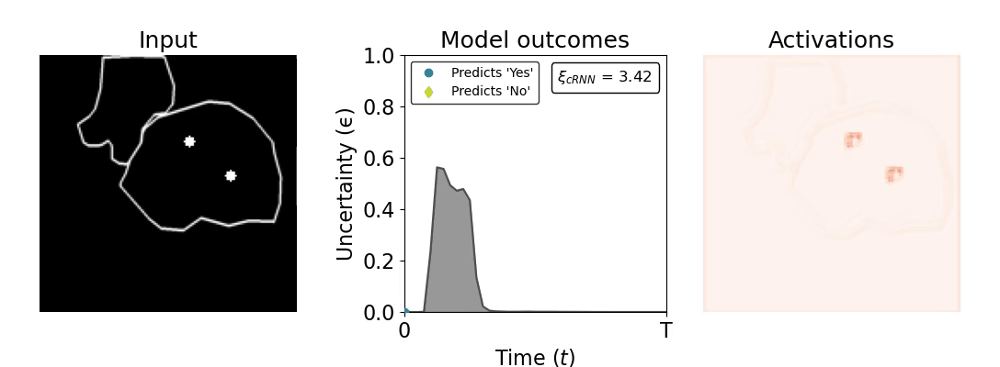
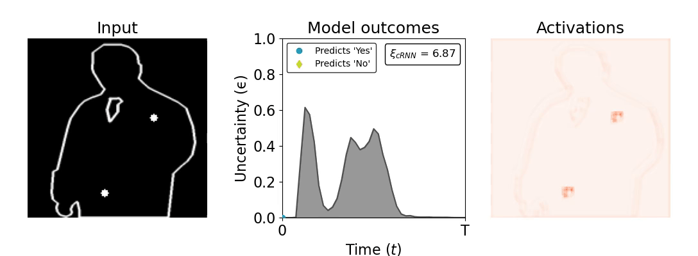
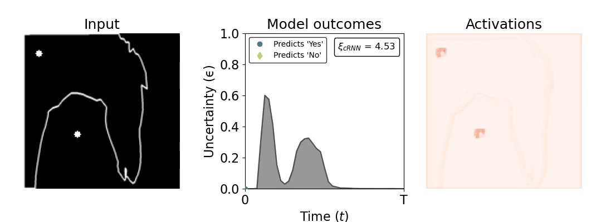
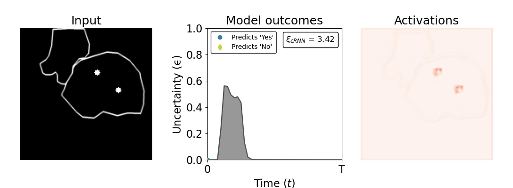
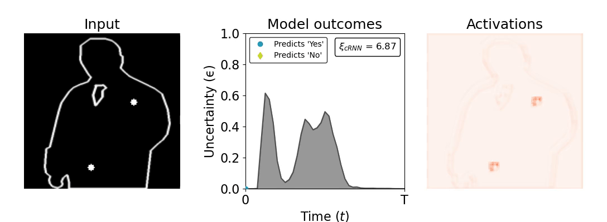
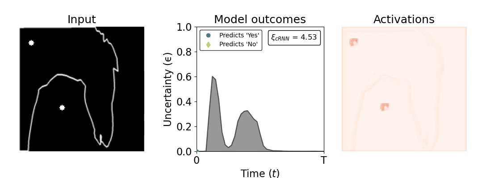


 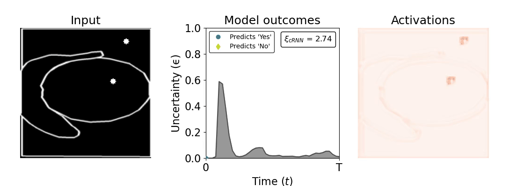
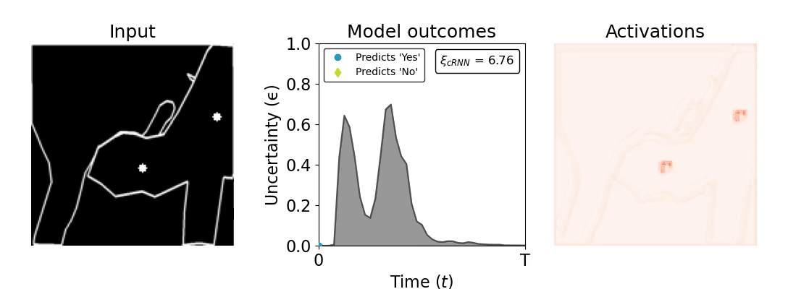
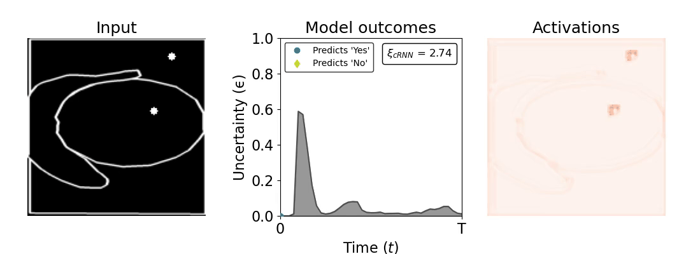
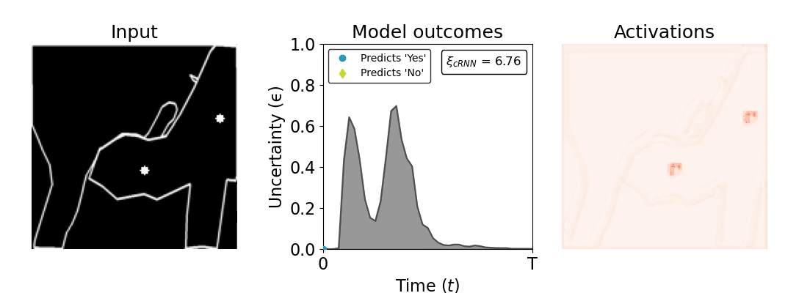
 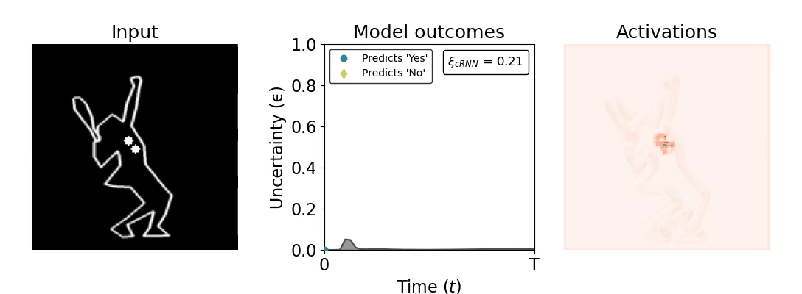
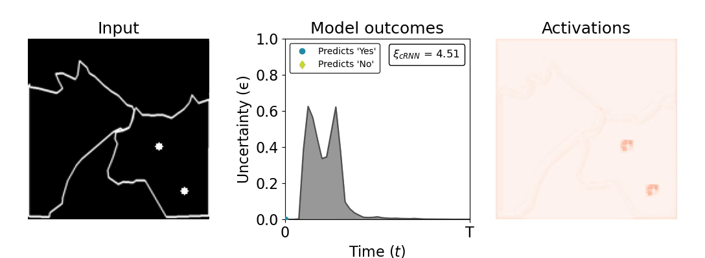
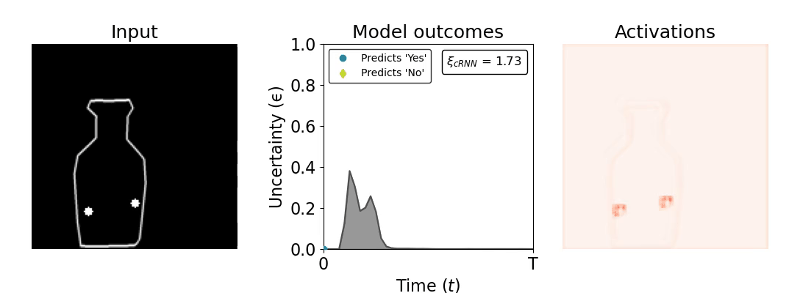
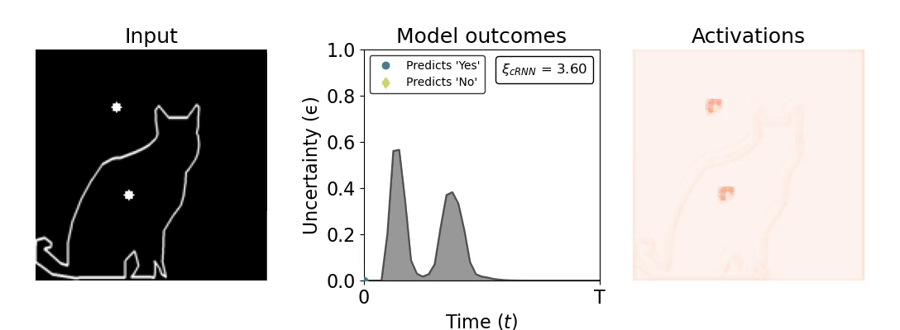
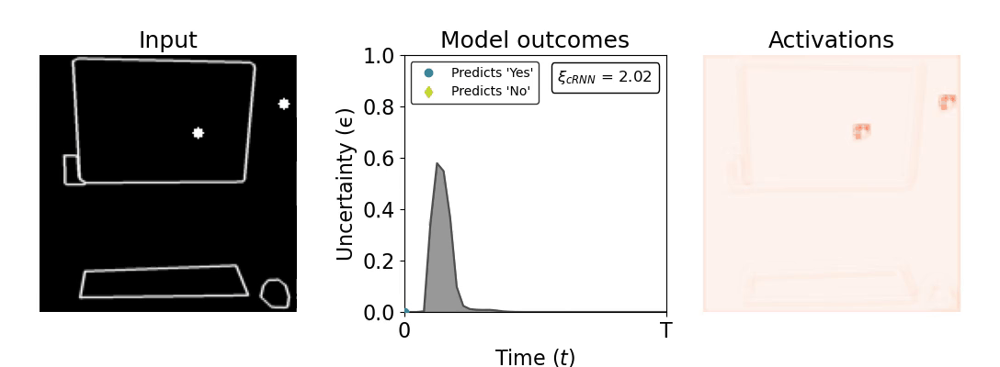
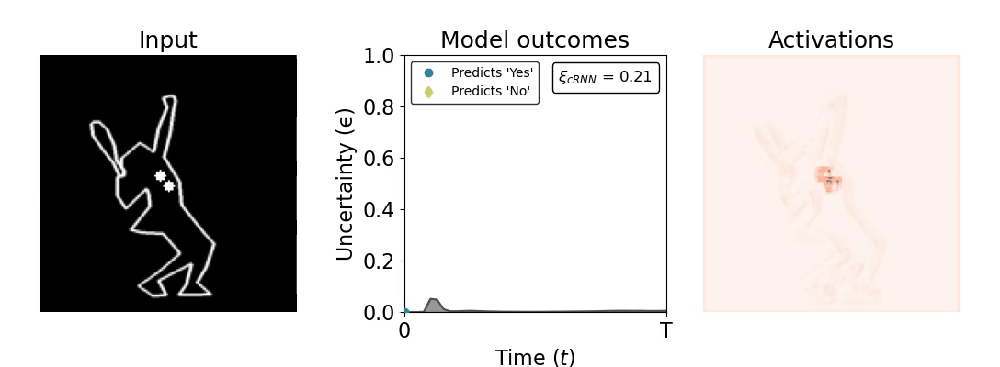
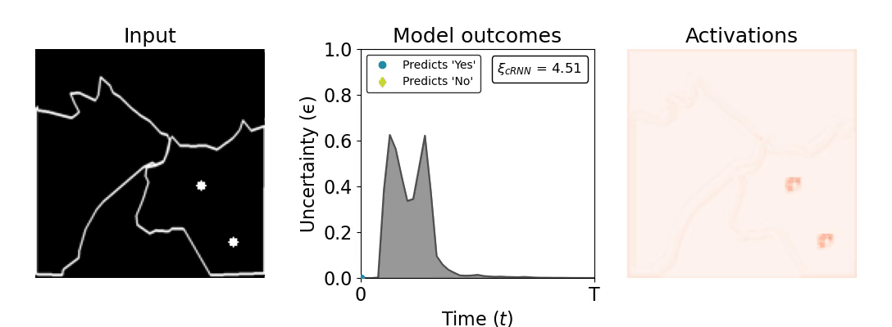
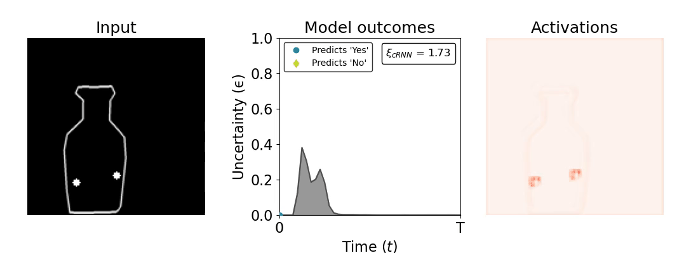
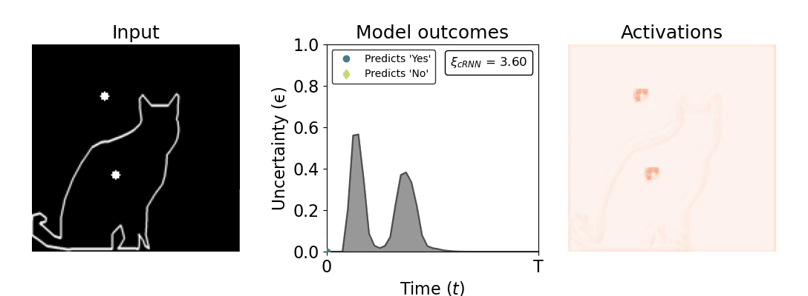
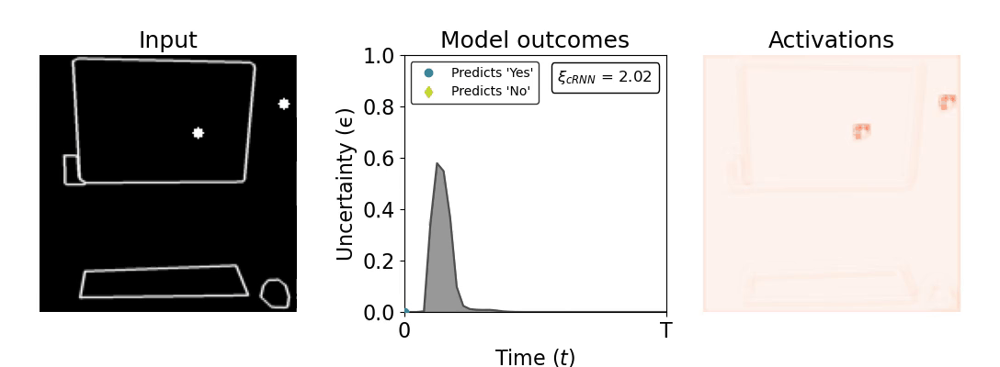


 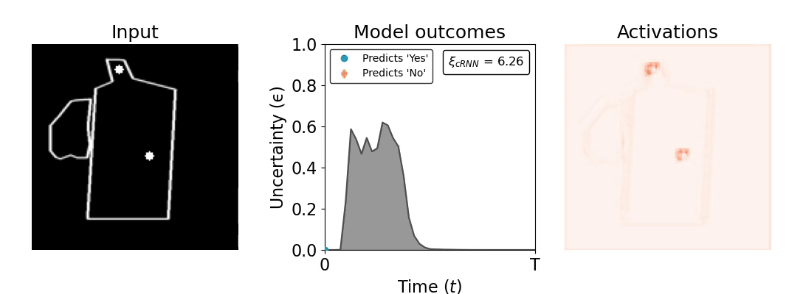
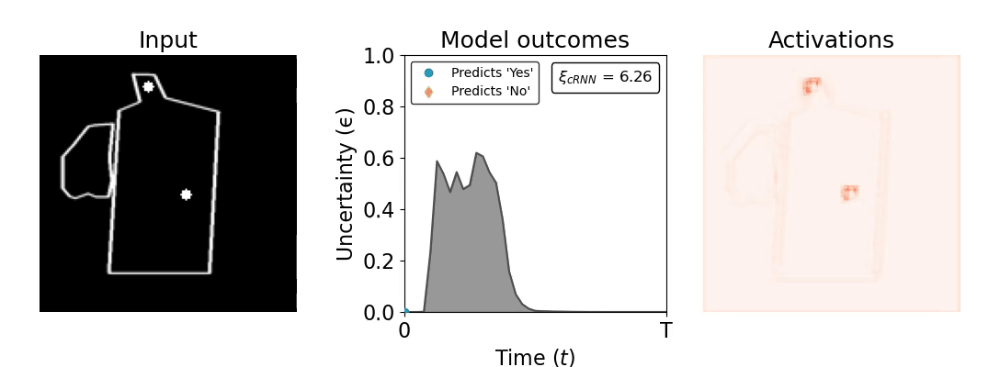